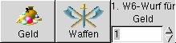
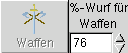
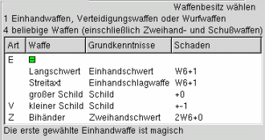
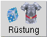
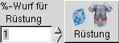
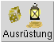
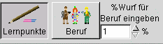

|
Herkunftsland wählen:
Über diesen Button wird das Herkunftsland des Abenteurers ausgewählt.
Es stehen nur die Länder zur Auswahl, in denen der
Abenteurertyp exisitert (Diese Auswahl kann durch "Einschränkungen aufheben" erweitert werden.)
Unmittelbar nach der Auswahl des Herkunftlandes wird das Gelände für die ungelernte Fähigkeit "Überleben" festgelegt. |

 |
 |
Angeborene Fertigkeiten:
Um die angeborenen Fertigkeiten zu ermitteln dient dieser Button.
Es gibt zwei Wege, auf welchen der Angeborenen Fertigkeit ermittelt werden können.
Durch einen Druck auf die linke Maustaste wird eine Fertigkeit zufällig ausgwürfelt.
Mit der rechten Maustaste öffnet sich ein Auswahlfenster (Abb.: rechts).
In dem Auswahlfenster können eine oder mehrere angeborene Fertigkeiten mit der Maus
selektiert werden. |
 |
 |
Lernpunkte würfeln:
Das Anklicken dieses Buttons hat zur Folge, dass die Lernpunkte für die verschiedenen Bereiche ausgewürfelt werden. |
|
 |
Lernpunkte Editieren:
Die bereits erwürfelten Lernpunkte können in den jeweiligen Feldern manuell editiert werden. Alternativ können die Lernpunkte von vorneherein manuell eingegeben werden.
Darüberhinaus kann der Wurf für die Berufs direkt eingegeben werden. |
|

 |
Geld erwürfeln
linke Maustaste: Geld auswürfeln
rechte Maustaste: Den W6-Wurf auf Geld direkt eingeben |
|

 |
Waffen erwürfeln
linke Maustaste: Waffen erwürfeln.
rechte Maustaste: Würfelwurf eingeben. Abhängig von den gelernten Waffenfertigkeiten und dem Würfelergebnis ergibt sich die Waffenauswahl. (Abbildung rechts) |
 |

 |
Rüstung würfeln:
Die Rüstung des Abenteurers wird bestimmt:
linke Maustaste: würfeln
rechte Maustaste: Den Würfelwurf für die Rüstung direkt eingeben |
|
|  |
Ausrüstung würfeln:
Zur Ausübung einiger Fertigkeiten werden eingige Utensilien benötigt. Mit dem Erlernen dieser Fertigkeit besteht eine gewisse Wahrscheinlichkeit, dass der Abenteurer diese besitzt. |
|
 |
Berufswahl:
Es bestehen drei Möglichkeiten, wie ein Beruf ausgewählt werden kann:
Lernpunkte editieren:
Der Wert für den Beruf kann direkt eingegeben werden und die möglichen Berufe können aus der Liste ausgewählt werden (s.u.). |
rechte Maustaste:
Neben dem Button erscheint ein Eingabefeld. In dieses kann ein Beruf direkt eingegeben werden.
In diesem Fall wird jedoch keine mit dem Beruf verbundene Fertigkeit berücksichtigt. |
linke Maustaste:
Der Wert für den Beruf wird ausgewürfelt und es öffnet sich ein Auswahfenster, welches die verfügbaren Berufe und
die mit ihnen verbundenen Fertigkeiten auflistet.
Die Berufsfertigkeit wird durch die Selektion einer mit ihr verbundenen Fertigkeit bestimmt. |
|
|  |
 |
 |
|